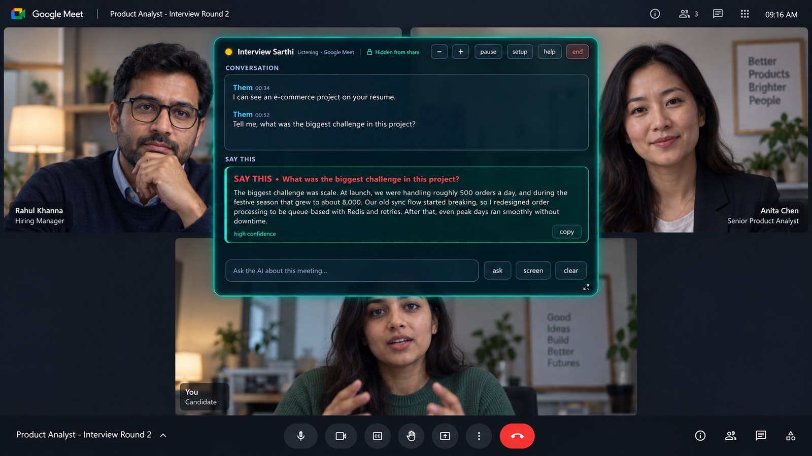

Home › Interview Sarthi vs OphyAI
Interview Sarthi vs OphyAI
Choose based on your device, preparation needs and the way you pay for access.

Disclosure: we build Interview Sarthi. Public information reviewed on 15 September 2026; this page is not a hands-on benchmark.
What we could verify
OphyAI: India Pro: ₹2,631/month, 300 credits; Premium: ₹5,353/month, 500 credits. Official product and pricing source.
Its India page lists practice and resume tools. The FAQ distinguishes a 15-minute free Practice session from a separate first Copilot session.
Interview Sarthi offers 30 minutes free per computer, then ₹99 for 2 days, ₹399 for 7 days, ₹999 for 30 days or ₹1,999 for 90 days. Passes do not auto-renew. See the pricing cards and product facts.
What changes the decision
Allocate credits across the features you need. Check whether your intended coding workflow requires Premium, and test language handling yourself.
Interview Sarthi focuses on resume-grounded assistance on Windows, in English, Hindi and Hinglish. You provide a Gemini key and set up the app yourself. It can assist during a mock call with another person, but it does not provide an autonomous mock interviewer or resume builder. If those are essential, evaluate a preparation suite.
Compare total cost for your own schedule
List the calls you expect, their likely length and the days between rounds. A calendar-day pass expires with time; a metered plan uses credits or minutes. Check the selected vendor plan for expiration, per-call limits, device limits, renewal and refunds. Do not compare a short pass with a monthly subscription as if they cover the same period.
For Interview Sarthi, the 2-day and 7-day passes cover one device; the 30-day and 90-day passes cover two. Google API limits still apply, and enabling paid API use creates a separate Google cost.
Run a fair mock-call trial
- Use the same computer, headset and call platform where possible.
- Ask the same project question and follow-up; check whether the answer matches your resume.
- Try a mixed Hindi-English sentence and verify names, numbers and technical terms.
- Record errors and delays rather than relying on a single fluent answer.
We have not verified OphyAI's Hinglish accuracy, data path or behavior on every meeting platform. A missing verification is not a claim that a feature is absent. Review its current privacy and support documentation.
Further help
See all seven products, the category guide and Hinglish preparation. Use AI assistance only where your employer, interviewer or assessment provider permits it. For preparation, practise in a mock call and review suggestions against your own experience.